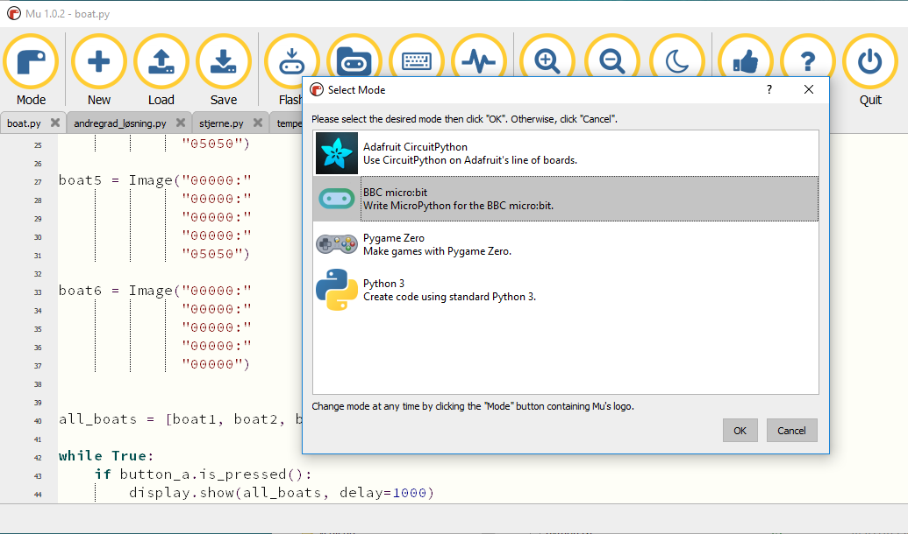

Minikurs Sauda vgs (24.april 2019)
Grunnleggende informasjon om muligheten ved koding i undervisningen
Program:
Introduksjon
Karrusell 1 (nivå 1) : Blocky (Angry bird ol.)
Karrusell 2 (nivå 2) : Scotty Go!
Karrusell 3 (nivå 3) : Microbit
Karrusell 4 (nivå 4) : Python
Oppsummering
Introduksjon
Learning by doing. Hvorfor programmering og programfag Informasjonsteknologi?
Lære å mislykkes, programmering er ikke lett (prøv, test, får feilmeldinger, prøv på nytt -> læringsprosess!)
Kritisk tenkning og problemløsende evne, å programmere hjelper å utvikle dette
Omdanne kreativitet til et håndgripelig produkt
Forstå hvordan den digitale verden fungerer (se video nedenfor, algoritme_ST)
Jobbmuligheter (se meningsmåling nedenfor)
For meningsmåling OsloMet, klikk
her .
VIDEO
Kort gjennomgang i forskjellige karruseller.
Tilbake til tops
Karrusell 1: Blocky (Angry bird ol.)
Klikk her for å starte.
Oppgave: gå gjennom forskjellige oppgaver. Ikke ta alle, hopp over noen...
Tilbake til tops
Karrusell 2: Scotty Go!
Kombinasjon av bordspillet og teknologi.
VIDEO
Tilbake til tops
Karrusell 3: Microbit
Instruer en veldig enkel robot. Klikk her
for å komme i gang med Microsoft's Make your code.
2 eksempler: Microbit og Inventors Kit.
VIDEO
Læringssti : Programmering med Micro:bit.
Tilbake til tops
Karrusell 4: Python
Klikk her for å komme i gang med en online,
web basert python interpreter (Trinket). Gode muligheter til å bruke i matte- og fysikk-undervisning
(Slik kan programmering endre skolen) og se på denne youtube kanal fra Andreas Haraldsrud (foredragsholder i Kopervik, dd. 13.februar).
Python kan også bli brukt til å programmere microbit. Derfor trenger du å laste ned Mu programvare på din data.

Klikk her for å laste ned Mu
Tilbake til tops
Oppsummering
Til slutt noen muligheter å komme i gang med programmering (python, Java, JavaScript, HTML, CSS, PHP, MySQL osv):
Trinket : Intro i python
Noen eksempler : matte og Naturfag (lokus.no)
Codecademy : fra websider til litt mer
avansert programmering (blir mindre fri tilgang)
Coursera : fra kurs til mer
Sololearn : mer avansert programmering
W3Schools : norsk webside som oppsummerer alt med å bygge websider fra scratch
Ved spørsmål, gjerne ta kontakt (Martijn B. ).
Tilbake til tops
Hovedside